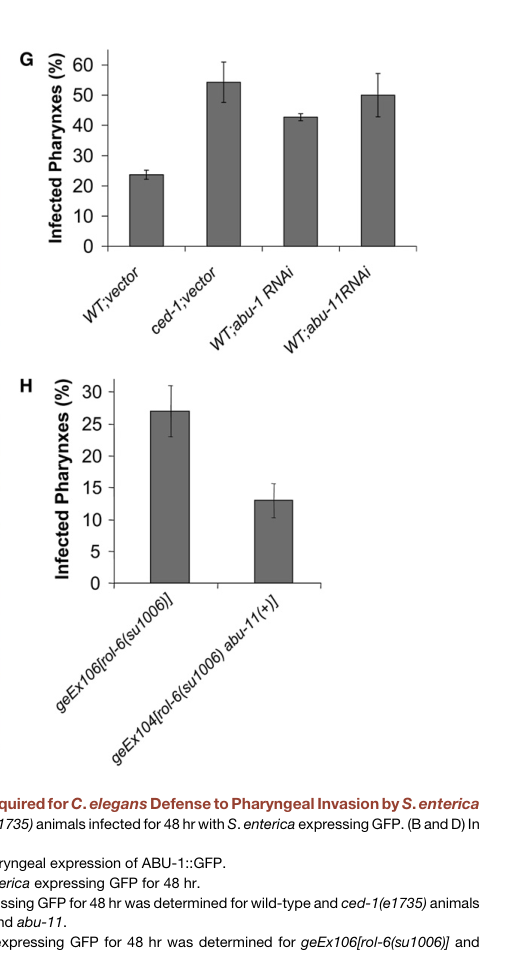

ABU-1 (Activated in Blocked Unfolded protein response) is a type I transmembrane protein that functions in an alternative ER stress response pathway. Unlike canonical UPR genes that are induced by the IRE1-XBP-1 pathway, abu-1 is specifically upregulated when this canonical pathway is blocked. ABU-1 localizes to the ER membrane and intracellular vesicular structures. The protein contains a signal sequence, a lumenal domain with similarity to scavenger receptors, a transmembrane domain, and a short cytoplasmic tail. ABU-1 is essential for survival of animals with a blocked UPR under ER stress conditions, suggesting it provides a backup mechanism for handling misfolded ER client proteins. The lumenal domain shares similarity with mammalian scavenger receptors and C. elegans CED-1, suggesting ABU-1 may bind to altered ER client proteins and modulate their intracellular fate. Beyond ER proteostasis, abu-1 is a member of the pqn/abu cohort that contributes to CED-1-dependent innate immunity: it is strongly expressed in the pharynx (a barrier tissue), its expression depends on CED-1, abu-1 RNAi increases Salmonella pharyngeal invasion, and ABU-1 overexpression rescues the enhanced pathogen susceptibility of ced-1 mutants (PMID:18606143). This noncanonical UPR/immune program is in turn negatively regulated by neuronal OCTR-1 signaling (PMID:21474712).
| GO Term | Evidence | Action | Reason |
|---|---|---|---|
|
GO:0005789
endoplasmic reticulum membrane
|
IBA
GO_REF:0000033 |
ACCEPT |
Summary: ABU-1 localization to ER membrane is well-supported by experimental data. In C. elegans, ABU-1-GFP localizes to vesicular structures within the endomembrane system (PMID:12186849). When expressed in mammalian COS-1 cells, FLAG-tagged ABU-1 shows a diffuse reticular pattern that colocalizes with the ER marker ribophorin I. The protein is retained in the ER by its transmembrane domain.
Reason: The IBA annotation is consistent with direct experimental evidence from PMID:12186849 showing ABU-1 colocalization with ER marker ribophorin I in mammalian cells and association with the endomembrane system in C. elegans. The IDA annotation from the same publication provides experimental validation.
Supporting Evidence:
PMID:12186849
Immunostaining of the FLAG-tagged ABU-1–expressing COS1 cells with anti-FLAG antibodies showed a diffuse reticular pattern that colocalized with the ER marker ribophorin I
file:worm/abu-1/abu-1-deep-research-falcon.md
A **ges-1::abu-1::gfp** fusion showed **punctate vesicular/endomembrane localization** in intestinal cells (with clustering near the apical surface), while mammalian-cell expression suggested ER retention and colocalization with an ER marker (ribophorin I), consistent with ABU-1 acting within the **endomembrane/ER system** rather than the plasma membrane
|
|
GO:0030968
endoplasmic reticulum unfolded protein response
|
IBA
GO_REF:0000033 |
ACCEPT |
Summary: The IBA annotation for ER UPR involvement is appropriate but requires careful interpretation. ABU-1 is part of an ALTERNATIVE pathway that is activated when the canonical IRE1-XBP-1 UPR pathway is blocked. It is not induced by ER stress in wild-type animals but specifically in xbp-1 mutants (PMID:12186849). The GO term captures the general involvement in ER stress response, though the mechanism is distinct from canonical UPR.
Reason: While ABU-1 functions in an alternative rather than canonical UPR pathway, the GO term GO:0030968 (endoplasmic reticulum unfolded protein response) is appropriately broad to encompass this function. The term definition includes responses to unfolded proteins in the ER, which ABU-1 participates in, albeit through a non-canonical mechanism. RNAi knockdown of abu-1 causes ER stress and kills ER-stressed animals with blocked UPR, demonstrating its role in maintaining ER homeostasis.
Supporting Evidence:
PMID:12186849
Nine of these encode highly similar, novel proteins with a hydrophobic NH2-terminal signal sequence, a potential transmembrane domain, and a short COOH-terminal cytoplasmic domain
PMID:12186849
These observations are consistent with a role for abu-1 (and possibly other ABU genes) in protecting animals with a defective UPR against ER stress
file:worm/abu-1/abu-1-deep-research-falcon.md
Instead, the strongest data support ABU-1 as an **ER/endomembrane proteostasis factor** that protects cells/animals from ER stress, especially when canonical UPR signaling is defective
|
|
GO:0030968
endoplasmic reticulum unfolded protein response
|
HEP
PMID:12186849 A survival pathway for Caenorhabditis elegans with a blocked... |
ACCEPT |
Summary: The HEP (high-throughput expression pattern) annotation is based on microarray expression data from PMID:12186849 showing that abu-1 is induced by ER stress (tunicamycin treatment) specifically in xbp-1 mutant animals. Northern blot analysis confirmed this expression pattern.
Reason: The expression pattern evidence correctly captures that abu-1 is transcriptionally induced during ER stress conditions, specifically in animals with blocked canonical UPR. This is valid evidence for involvement in ER stress response processes.
Supporting Evidence:
PMID:12186849
Northern blot analysis confirmed the induction of abu-1 by tunicamycin treatment of xbp-1 mutant animals but not wild-type animals
PMID:12186849
We refer to members of this family as activated in blocked UPR (abu)
file:worm/abu-1/abu-1-deep-research-falcon.md
Quantitatively, Table II reports **abu-1/AC3.3** tunicamycin induction (tunicamycin vs untreated; mean ± SEM, n=3) as base-2 log fold-change **1.45 ± 0.29 (xbp-1)** versus **0.16 ± 0.46 (N2)**
|
|
GO:0003674
molecular_function
|
ND
GO_REF:0000015 |
ACCEPT |
Summary: The ND (No biological Data) annotation indicates that no specific molecular function has been experimentally determined for ABU-1. While the protein has sequence similarity to scavenger receptors and may bind to altered ER client proteins, this has not been directly demonstrated.
Reason: This is an appropriate use of ND. Although PMID:12186849 suggests that ABU proteins may bind to altered ER client proteins based on sequence similarity to scavenger receptors, no direct biochemical demonstration of a specific molecular function has been published. The authors state this is a hypothesis.
Supporting Evidence:
PMID:12186849
It is possible therefore that the ABU proteins may be playing a similar role within the endomembrane system, perhaps by binding to altered ER client proteins and modulating their intracellular fate
file:worm/abu-1/abu-1-deep-research-falcon.md
No enzymatic reaction, transporter substrate, or ligand-binding specificity has been established for ABU-1 in the retrieved evidence.
|
|
GO:0005789
endoplasmic reticulum membrane
|
IDA
PMID:12186849 A survival pathway for Caenorhabditis elegans with a blocked... |
ACCEPT |
Summary: Direct experimental evidence from PMID:12186849 demonstrates ABU-1 localization to the ER membrane. When expressed in mammalian COS-1 cells, FLAG-tagged ABU-1 shows colocalization with the ER marker ribophorin I. In C. elegans, ABU-1-GFP localizes to vesicular structures within the endomembrane system. The protein is retained in the ER by its transmembrane domain, as deletion of this domain leads to secretion.
Reason: The IDA annotation is well-supported by multiple lines of experimental evidence from PMID:12186849: (1) colocalization with ER marker ribophorin I in mammalian cells, (2) localization to intracellular vesicular structures in C. elegans, (3) membrane retention is dependent on the transmembrane domain. This is a core localization for understanding ABU-1 function.
Supporting Evidence:
PMID:12186849
Immunostaining of the FLAG-tagged ABU-1–expressing COS1 cells with anti-FLAG antibodies showed a diffuse reticular pattern that colocalized with the ER marker ribophorin I
PMID:12186849
The fluorescence pattern of ABU-1–GFP suggested that the protein was associated with the intracellular endomembrane system
PMID:12186849
Deletion of the predicted transmembrane domain led to secretion of the protein into the culture media
file:worm/abu-1/abu-1-deep-research-falcon.md
In heterologous expression experiments, ABU-1 behaved as an **integral membrane protein** that remained in the pellet unless detergent-extracted; deletion of the predicted transmembrane region caused secretion, supporting that the transmembrane domain mediates membrane association/retention
|
|
GO:0030968
endoplasmic reticulum unfolded protein response
|
IMP
PMID:12186849 A survival pathway for Caenorhabditis elegans with a blocked... |
ACCEPT |
Summary: The IMP (Inferred from Mutant Phenotype) annotation is supported by RNAi knockdown experiments in PMID:12186849. Inactivation of abu-1 by RNAi: (1) activated the ER stress marker hsp-4::gfp in otherwise normal animals, indicating development of ER stress; (2) killed approximately 50% of ER-stressed ire-1 and xbp-1 mutant animals; (3) had synthetic interactions with sel-1 (ERAD component). These phenotypes demonstrate a functional role in ER stress response.
Reason: The IMP evidence from RNAi experiments clearly demonstrates that abu-1 functions in ER homeostasis. Loss of function causes ER stress (hsp-4::gfp activation) and is lethal in combination with canonical UPR mutants under stress conditions. This is strong genetic evidence for involvement in ER stress response pathways.
Supporting Evidence:
PMID:12186849
RNA-mediated interference (RNAi) inactivation of a representative abu family member, abu-1 (AC3.3), activated the ER stress marker hsp-4::gfp in otherwise normal animals and killed 50% of ER-stressed ire-1 and xbp-1 mutant animals
PMID:12186849
abu-1(RNAi) upregulated the ER stress reporter gene hsp-4::gfp in the intestine
PMID:12186849
These observations suggest that abu-1 (and possibly other abu genes) and sel-1 perform partially redundant functions in animals with a blocked UPR
file:worm/abu-1/abu-1-deep-research-falcon.md
abu-1 RNAi caused approximately **50% lethality** in ER-stressed **ire-1** and **xbp-1** mutant animals, with comparatively minimal effects in wild type under the described conditions—supporting a model in which ABU proteins are partially redundant with the canonical UPR and become critical when UPR capacity is reduced
file:worm/abu-1/abu-1-deep-research-falcon.md
**Interaction with ER-associated degradation (ERAD):** abu-1 inactivation enhanced perturbation of **sel-1** (an ERAD-related gene), consistent with partial functional redundancy or coordination between ABU-dependent proteostasis and ERAD pathways
|
|
GO:0050829
defense response to Gram-negative bacterium
|
IMP
PMID:18606143 Unfolded protein response genes regulated by CED-1 are requi... |
NEW |
Summary: Falcon deep research surfaced a defense/immunity dimension for abu-1 not
captured by the existing GOA annotations. Haskins et al. (2008, PMID:18606143)
demonstrated experimentally that abu-1, as part of the CED-1-regulated pqn/abu
cohort, is required for pharyngeal defense against the Gram-negative pathogen
Salmonella enterica: abu-1 RNAi increases Salmonella pharyngeal invasion to
levels comparable to ced-1 mutants, and ABU-1 overexpression rescues the
enhanced pathogen susceptibility of ced-1(e1735) animals. This connects ABU-1's
ER/endomembrane proteostasis role to barrier innate immunity.
Reason: This is a novel functional annotation supported by direct mutant-phenotype
and overexpression-rescue evidence in Haskins et al. (2008) that is absent
from the current GOA. It captures a biologically important role for abu-1 in
host defense distinct from the ER UPR terms already annotated. Salmonella
enterica is a Gram-negative bacterium, so GO:0050829 is the appropriate term.
Supporting Evidence:
PMID:18606143
the pharyngeal invasion of ced-1(e1735) animals is comparable to that of abu-1 RNAi and abu-11 RNAi animals, which greatly contrasts to the limited pharyngeal invasion observed in wild-type nematodes grown on control RNAi plates (Figure 5G).
PMID:18606143
abu-1 overexpression rescues the enhanced susceptibility to S. enterica of ced-1(e1735) mutants (Figure 6D).
file:worm/abu-1/abu-1-deep-research-falcon.md
The same work provides functional evidence that **ABU-1 contributes to resistance to live-pathogen challenge**: abu-1 RNAi increases *Salmonella* pharyngeal invasion, and ABU-1 overexpression can rescue the increased susceptibility of **ced-1(e1735)** mutants
|
Q: What is the direct molecular function of ABU-1? Does it act as a receptor for misfolded proteins in the ER lumen?
Q: How is abu-1 transcriptionally regulated in xbp-1 mutants? Is it dependent on PERK/PEK-1 or ATF6/ATF-6?
Q: Do all nine ABU family members have redundant functions, or do they have specialized roles?
Q: What is the significance of the constitutive expression of abu-1 in the pharynx? Is the pharyngeal expression directly linked to its role in CED-1-dependent barrier defense against ingested pathogens?
Q: Does ABU-1 directly interact with ERAD components or function in a parallel pathway?
Q: How does CED-1 activate pqn/abu gene expression, and is the neuronal OCTR-1 pathway the principal upstream regulator that tunes abu-1 levels during infection?
Experiment: Biochemical identification of ABU-1 binding partners in the ER lumen to determine if it directly binds misfolded proteins.
Experiment: Structure-function analysis of the scavenger receptor-like domain to identify residues required for function.
Experiment: Single and combinatorial knockouts of all abu family members to determine redundancy and synthetic genetic interactions.
Experiment: Identification of the transcription factor(s) responsible for abu-1 induction in xbp-1 mutants.
Experiment: Proteomics analysis to identify proteins that accumulate when abu-1 is inactivated.
Experiment: Pathogen challenge assays (e.g., Salmonella enterica or Pseudomonas aeruginosa) with abu-1 single mutants/RNAi versus ced-1 and octr-1 backgrounds to dissect the contribution of abu-1 to barrier immunity independent of other pqn/abu family members.
The research report should be a detailed narrative explaining the function, biological processes, and localization of the gene product. Citations should be given for all claims.
You should prioritize authoritative reviews and primary scientific literature when conducting research. You can supplement
this with annotations you find in gene/protein databases, but these can be outdated or inaccurate.
We are specifically interested in the primary function of the gene - for enzymes, what reaction is catalyzed, and what is the substrate specificity? For transporters, what is the substrate? For structural proteins or adapters, what is the broader structural role? For signaling molecules, what is the role in the pathway.
We are interested in where in or outside the cell the gene product carries out its function.
We are also interested in the signaling or biochemical pathways in which the gene functions. We are less interested in broad pleiotropic effects, except where these elucidate the precise role.
Include evidence where possible. We are interested in both experimental evidence as well as inference from structure, evolution, or bioinformatic analysis. Precise studies should be prioritized over high-throughput, where available.
The target gene abu-1 in this report refers specifically to the C. elegans gene abu-1, also described in the primary literature as ORF AC3.3 and encoding the protein ABU-1 (“Activated in Blocked Unfolded protein response”). This identity matches the UniProt accession provided (Q17400) and the description “Activated in Blocked Unfolded protein response” (urano2002asurvivalpathway pages 2-4).
No evidence in the retrieved corpus indicates that the symbol abu-1 is being used for a different gene/protein in another organism in a way that would confound interpretation here.
In C. elegans, the canonical endoplasmic reticulum unfolded protein response (UPRER) includes an IRE-1 → XBP-1 signaling branch that transcriptionally induces many ER proteostasis genes during ER stress. Urano et al. discovered that when this canonical pathway is genetically blocked (e.g., xbp-1 mutants), a distinct set of genes is induced by ER stress; these were termed abu genes (“activated in blocked UPR”), with abu-1/AC3.3 used as a representative family member (urano2002asurvivalpathway pages 2-4).
ABU genes encode highly related membrane proteins proposed to help handle abnormal/misfolded ER client proteins when canonical UPR capacity is impaired; genetic evidence supports ABU proteins as a compensatory ER-protective system that becomes essential under UPR compromise (urano2002asurvivalpathway pages 1-2, urano2002asurvivalpathway pages 6-7).
ABU-1 is described as a type I single-pass membrane protein family member, with an N-terminal signal sequence, a luminal domain, a transmembrane segment, and a short C-terminal cytosolic tail (urano2002asurvivalpathway pages 2-4).
In heterologous expression experiments, ABU-1 behaved as an integral membrane protein that remained in the pellet unless detergent-extracted; deletion of the predicted transmembrane region caused secretion, supporting that the transmembrane domain mediates membrane association/retention (urano2002asurvivalpathway pages 4-5).
A ges-1::abu-1::gfp fusion showed punctate vesicular/endomembrane localization in intestinal cells (with clustering near the apical surface), while mammalian-cell expression suggested ER retention and colocalization with an ER marker (ribophorin I), consistent with ABU-1 acting within the endomembrane/ER system rather than the plasma membrane (urano2002asurvivalpathway pages 4-5, urano2002asurvivalpathway pages 2-4).
A key caveat noted by Urano et al. is that the authors could not detect endogenous ABU-1 protein directly, so localization inferences are derived from tagged constructs/reporters (urano2002asurvivalpathway pages 4-5).
Reporter analyses indicate strong basal pharynx/head expression from late larval stages to young adult, with low basal intestinal expression that becomes stress inducible (urano2002asurvivalpathway pages 5-6, urano2002asurvivalpathway pages 6-7).
No enzymatic reaction, transporter substrate, or ligand-binding specificity has been established for ABU-1 in the retrieved evidence. Instead, the strongest data support ABU-1 as an ER/endomembrane proteostasis factor that protects cells/animals from ER stress, especially when canonical UPR signaling is defective (urano2002asurvivalpathway pages 1-2, urano2002asurvivalpathway pages 6-7).
Urano et al. demonstrated that abu-1 is preferentially induced by ER stress (tunicamycin) in xbp-1 mutants compared with wild type. Quantitatively, Table II reports abu-1/AC3.3 tunicamycin induction (tunicamycin vs untreated; mean ± SEM, n=3) as base-2 log fold-change 1.45 ± 0.29 (xbp-1) versus 0.16 ± 0.46 (N2) (urano2002asurvivalpathway pages 2-4).
Chemical ER stressors (tunicamycin, cadmium) induce abu-1::gfp in the intestine, particularly in UPR-impaired backgrounds (urano2002asurvivalpathway pages 5-6, urano2002asurvivalpathway pages 4-5).
Loss of ABU function triggers ER stress markers: abu-1 RNAi induced the ER stress reporter hsp-4::gfp in the intestine, indicating that reducing ABU activity is sufficient to perturb ER proteostasis (urano2002asurvivalpathway pages 5-6, urano2002asurvivalpathway pages 6-7).
Synthetic vulnerability when canonical UPR is compromised: abu-1 RNAi caused approximately 50% lethality in ER-stressed ire-1 and xbp-1 mutant animals, with comparatively minimal effects in wild type under the described conditions—supporting a model in which ABU proteins are partially redundant with the canonical UPR and become critical when UPR capacity is reduced (urano2002asurvivalpathway pages 1-2, urano2002asurvivalpathway pages 6-7).
Interaction with ER-associated degradation (ERAD): abu-1 inactivation enhanced perturbation of sel-1 (an ERAD-related gene), consistent with partial functional redundancy or coordination between ABU-dependent proteostasis and ERAD pathways (urano2002asurvivalpathway pages 5-6).
Haskins et al. (2008) connected pqn/abu genes—including abu-1—to innate immunity in C. elegans, particularly in pharyngeal defense against Salmonella enterica. They report that pqn/abu genes are strongly expressed in the pharynx (a barrier tissue) and that ced-1 mutants exhibit high levels of pharyngeal infection; by 48 hours, >50% of ced-1 animals showed infected pharynges (haskins2008unfoldedproteinresponse pages 5-7).
The same work provides functional evidence that ABU-1 contributes to resistance to live-pathogen challenge: abu-1 RNAi increases Salmonella pharyngeal invasion, and ABU-1 overexpression can rescue the increased susceptibility of ced-1(e1735) mutants (haskins2008unfoldedproteinresponse pages 5-7, haskins2008unfoldedproteinresponse media 3a2e5c4e, haskins2008unfoldedproteinresponse media a5255cf7).
Sun et al. (2011) described a neuro-immune regulatory mechanism in which the neuronal GPCR OCTR-1 suppresses peripheral innate immunity partly by down-regulating noncanonical UPR genes described as pqn/abu. In this model, the pqn/abu cohort sits at the interface of ER-stress/proteostasis gene regulation and innate immune outcomes, under neuronal control (sun2011neuronalgpcrcontrols pages 1-2).
Although 2023–2024 literature in the retrieved corpus contains limited abu-1-specific mechanistic dissection, a high-impact 2023 study on dietary restriction and lipid metabolism (ACS-20/FATP4) reports that abu-family genes are significantly upregulated in a context interpreted as ER proteostasis stress, and explicitly frames abu genes as endomembrane proteins induced when the canonical IRE-1–XBP-1 UPRER pathway is inactivated (Wang et al., 2023; published Nov 2023; https://doi.org/10.1038/s41467-023-43613-4). The study reports 138 upregulated genes (fold change >2, adjusted p < 0.01) in the relevant comparison and validates abu-family induction by RT-qPCR (Fig. 3d) (wang2023acs20fatp4mediatesthe pages 3-6).
This indicates that, in modern C. elegans systems biology and stress-physiology work, abu-family induction remains a practical marker of perturbed ER proteostasis and/or noncanonical UPR-like responses (wang2023acs20fatp4mediatesthe pages 3-6).
Searches constrained to 2023–2024 did not yield additional accessible primary studies that directly define ABU-1 biochemical activity, binding partners, or high-resolution localization mechanisms beyond the foundational genetics and reporter work. Thus, the “latest research” component for abu-1 is best represented by (i) continued use of abu genes as pathway markers in contemporary studies, and (ii) integration into broader ER proteostasis/innate immunity frameworks rather than abu-1-specific molecular mechanism expansions (wang2023acs20fatp4mediatesthe pages 3-6, sun2011neuronalgpcrcontrols pages 1-2).
The most consistent model across primary studies is:
1) ABU-1 (and related ABU proteins) function within the ER/endomembrane system.
2) ABU activity contributes to baseline ER proteostasis; when reduced, ER stress signatures rise (hsp-4::gfp induction).
3) When canonical UPR signaling (IRE-1/XBP-1) is compromised, ABU activity becomes crucial for survival under ER stress (synthetic stress lethality) (urano2002asurvivalpathway pages 6-7, urano2002asurvivalpathway pages 1-2).
Independent evidence places pqn/abu genes into pathogen defense (CED-1-dependent pharyngeal immunity) and neuronal regulation (OCTR-1-dependent suppression), suggesting that a subset of immune protection in C. elegans depends on ER/endomembrane proteostasis capacity in barrier tissues (pharynx/intestine) (haskins2008unfoldedproteinresponse pages 5-7, sun2011neuronalgpcrcontrols pages 1-2).
Across C. elegans research, abu-1 and the abu family are used in:
- Genetic interaction mapping of ER proteostasis (e.g., with ire-1/xbp-1 UPR components and sel-1 ERAD components) (urano2002asurvivalpathway pages 5-6).
- In vivo reporters (abu-1::gfp; hsp-4::gfp) to separate canonical UPRER outputs from noncanonical/compensatory ER stress programs (urano2002asurvivalpathway pages 5-6, urano2002asurvivalpathway pages 6-7).
- Host–pathogen infection assays (e.g., Salmonella pharyngeal invasion) to connect ER/endomembrane proteostasis and immune barrier function (haskins2008unfoldedproteinresponse pages 5-7, haskins2008unfoldedproteinresponse media 3a2e5c4e).
While ABU-1 itself is a nematode-specific family member, the broader conceptual application is that ER proteostasis capacity and compensatory ER stress programs influence barrier immunity and survival under proteotoxic stress—an idea often explored in higher organisms through analogous ER quality-control modules. In C. elegans, ABU genes provide a genetically tractable example of such compensation under canonical UPR compromise (urano2002asurvivalpathway pages 6-7, sun2011neuronalgpcrcontrols pages 1-2).
The following table consolidates core claims, evidence types, quantitative values, experimental contexts, and source DOI URLs.
| Claim/Observation | Evidence type | Key quantitative data | Experimental context | Source (paper, year, DOI URL) |
|---|---|---|---|---|
| Target identity verified: abu-1 corresponds to AC3.3 / ABU-1 in C. elegans and is a representative member of the ABU (Activated in Blocked UPR) family | Gene/protein identification from primary paper and reporter studies | ABU family initially described as 9 highly related genes with shared sequence identity sufficient for cross-targeting by RNAi in conserved 3' regions | C. elegans ER-stress genetics; abu-1 used as representative family member | Urano et al., 2002, J Cell Biol, https://doi.org/10.1083/jcb.200203086 (urano2002asurvivalpathway pages 2-4, urano2002asurvivalpathway pages 1-2) |
| Protein architecture: ABU-1 is a predicted type I single-pass membrane protein with N-terminal signal peptide, luminal domain, one transmembrane segment, and short C-terminal cytosolic tail | Sequence analysis; heterologous expression with TM-deletion test | TM deletion caused secretion of ABU-1, whereas full-length protein stayed membrane-associated and required detergent extraction | Structural/biochemical characterization in mammalian COS1 cells plus C. elegans sequence analysis | Urano et al., 2002, J Cell Biol, https://doi.org/10.1083/jcb.200203086 (urano2002asurvivalpathway pages 4-5, urano2002asurvivalpathway pages 2-4) |
| Family relationship: ABU proteins are related to the broader pqn/prion-like Q/N-rich family and are considered a non-canonical ER-stress/proteostasis module | Family-level review/microarray interpretation | ABU1–9 predicted TM proteins; ABU-10/11 predicted luminal in one later family analysis | ER stress/longevity literature synthesis in C. elegans | Viswanathan et al., 2005, Dev Cell, https://doi.org/10.1016/j.devcel.2005.09.017 (viswanathan2005arolefor pages 3-4) |
| Subcellular localization: ABU-1 localizes to the endomembrane system/ER rather than the plasma membrane | GFP fusion reporter; colocalization with ER marker; biochemical fractionation | ges-1::abu-1::gfp showed punctate vesicular pattern in intestine, tending to cluster near the apical surface; FLAG-ABU-1 colocalized with ribophorin I | Transgenic C. elegans intestine reporter and COS1 cell expression | Urano et al., 2002, J Cell Biol, https://doi.org/10.1083/jcb.200203086 (urano2002asurvivalpathway pages 4-5, urano2002asurvivalpathway pages 2-4) |
| Basal expression pattern: abu-1 is constitutively expressed in the pharynx/head and at low basal levels in intestine | Promoter/reporter assay | Strong pharyngeal/head expression from L3–L4 to young adult; low intestinal baseline that becomes stress inducible | abu-1::gfp reporter in living worms | Urano et al., 2002, J Cell Biol, https://doi.org/10.1083/jcb.200203086 (urano2002asurvivalpathway pages 5-6, urano2002asurvivalpathway pages 6-7) |
| ER-stress regulation: abu-1 is preferentially induced when the canonical IRE-1/XBP-1 UPR is blocked | Microarray; Northern blot; stress reporters | abu-1/AC3.3 base-2 log fold induction after tunicamycin: 1.45 ± 0.29 in xbp-1 mutants vs 0.16 ± 0.46 in N2 | Tunicamycin-treated worms comparing wild type and xbp-1 mutants | Urano et al., 2002, J Cell Biol, https://doi.org/10.1083/jcb.200203086 (urano2002asurvivalpathway pages 2-4) |
| Stress-inducible tissue response: ER stress induces abu-1 expression in intestine | GFP reporter under chemical stress | abu-1::gfp induced by tunicamycin and cadmium in intestine, especially in xbp-1 mutants | Chemical ER stress in transgenic worms | Urano et al., 2002, J Cell Biol, https://doi.org/10.1083/jcb.200203086 (urano2002asurvivalpathway pages 4-5, urano2002asurvivalpathway pages 5-6) |
| Loss of abu-1 function causes ER stress: ABU-1 normally helps maintain ER proteostasis | RNAi knockdown with ER-stress reporter | abu-1(RNAi) induced the ER stress reporter hsp-4::gfp in otherwise normal animals | Feeding RNAi in worms carrying hsp-4::gfp | Urano et al., 2002, J Cell Biol, https://doi.org/10.1083/jcb.200203086 (urano2002asurvivalpathway pages 1-2, urano2002asurvivalpathway pages 5-6, urano2002asurvivalpathway pages 6-7, urano2002asurvivalpathway pages 4-5) |
| Functional placement: ABU-1 protects animals specifically when the canonical UPR is impaired | RNAi + survival assay | abu-1(RNAi) killed about 50% of ER-stressed ire-1 and xbp-1 mutant animals | ER stress induced in UPR-defective backgrounds | Urano et al., 2002, J Cell Biol, https://doi.org/10.1083/jcb.200203086 (urano2002asurvivalpathway pages 1-2) |
| Genetic interaction with ERAD: abu-1 acts partly redundantly with sel-1 | Double perturbation genetics; phenotypic analysis | Combined abu-1 RNAi + sel-1 inactivation increased lethality and caused prominent dark intestinal granules/vesicles | ER quality-control stress in worms | Urano et al., 2002, J Cell Biol, https://doi.org/10.1083/jcb.200203086 (urano2002asurvivalpathway pages 5-6, urano2002asurvivalpathway pages 6-7) |
| Recent pathway placement (2023): abu-family genes remain markers/effectors of non-canonical ER proteostasis stress | RNA-seq/RT-qPCR in aging/dietary restriction study | In eat-2; acs-20 vs eat-2, 138 genes were upregulated using FC >2, adjusted p <0.01; ERUPR was top GO term and abu genes were among validated induced transcripts | Dietary restriction/epidermal lipid metabolism perturbation linked to ER proteostasis | Wang et al., 2023, Nat Commun, https://doi.org/10.1038/s41467-023-43613-4 (wang2023acs20fatp4mediatesthe pages 3-6) |
| Innate immunity role: pqn/abu genes, including abu-1, act in a CED-1-dependent host-defense pathway | Genetics, overexpression, RNAi, infection assays | In ced-1 mutants, by 48 h more than 50% of animals showed infected pharynges; abu-1 overexpression rescued susceptibility to live Salmonella | S. enterica infection; pharyngeal invasion and survival assays | Haskins et al., 2008, Dev Cell, https://doi.org/10.1016/j.devcel.2008.05.006 (haskins2008unfoldedproteinresponse pages 5-7, haskins2008unfoldedproteinresponse media 3a2e5c4e, haskins2008unfoldedproteinresponse media a5255cf7) |
| abu-1 is functionally protective in infection: reducing abu-1 increases pathogen invasion; increasing ABU-1 improves defense | RNAi knockdown and transgenic overexpression | Figure-based evidence shows abu-1 RNAi increased Salmonella pharyngeal invasion; ABU-1 overexpression rescued ced-1(e1735) susceptibility | Live bacterial infection, confocal and survival assays | Haskins et al., 2008, Dev Cell, https://doi.org/10.1016/j.devcel.2008.05.006 (haskins2008unfoldedproteinresponse pages 5-7, haskins2008unfoldedproteinresponse media 3a2e5c4e, haskins2008unfoldedproteinresponse media a5255cf7) |
| Neuronal immune regulation: noncanonical pqn/abu genes are negatively regulated by neuronal OCTR-1 signaling | Genetic analysis; genome-wide expression profiling | octr-1 mutants showed enhanced resistance to P. aeruginosa and increased expression of noncanonical UPR/immune genes including pqn/abu cohort (gene-set level rather than abu-1-specific value in excerpt) | Sensory-neuron control of peripheral immunity | Sun et al., 2011, Science, https://doi.org/10.1126/science.1203411 (sun2011neuronalgpcrcontrols pages 1-2) |
| Current best functional interpretation: ABU-1 is not an enzyme or transporter with known substrate; instead it is best supported as an ER/endomembrane membrane protein involved in proteostasis quality control, especially under blocked canonical UPR and during infection-associated stress | Synthesis of localization, induction, and genetic interaction evidence | No catalytic activity or transported substrate demonstrated; strongest evidence is from localization, reporter induction, synthetic sickness/lethality, and infection phenotypes | Integrative conclusion from primary studies | Supported collectively by Urano et al., 2002; Haskins et al., 2008; Sun et al., 2011; Wang et al., 2023 (urano2002asurvivalpathway pages 1-2, haskins2008unfoldedproteinresponse pages 5-7, sun2011neuronalgpcrcontrols pages 1-2, wang2023acs20fatp4mediatesthe pages 3-6) |
Table: This table compiles the strongest primary evidence for the identity, structure, localization, stress regulation, genetic interactions, and immunity-related roles of C. elegans ABU-1/AC3.3. It is designed to support a precise functional annotation centered on ER/endoplasmic membrane proteostasis rather than an enzymatic or transporter activity.
Cropped figure panels from Haskins et al. (2008) directly show Salmonella pharyngeal invasion and survival outcomes for abu-1/abu-11 RNAi and ABU overexpression/rescue, supporting ABU-1’s role in host defense (haskins2008unfoldedproteinresponse media 3a2e5c4e, haskins2008unfoldedproteinresponse media a5255cf7).
References
(urano2002asurvivalpathway pages 2-4): Fumihiko Urano, Marcella Calfon, Takunari Yoneda, Chi Yun, Moni Kiraly, Scott G. Clark, and David Ron. A survival pathway for caenorhabditis elegans with a blocked unfolded protein response. The Journal of Cell Biology, 158:639-646, Aug 2002. URL: https://doi.org/10.1083/jcb.200203086, doi:10.1083/jcb.200203086. This article has 274 citations.
(urano2002asurvivalpathway pages 1-2): Fumihiko Urano, Marcella Calfon, Takunari Yoneda, Chi Yun, Moni Kiraly, Scott G. Clark, and David Ron. A survival pathway for caenorhabditis elegans with a blocked unfolded protein response. The Journal of Cell Biology, 158:639-646, Aug 2002. URL: https://doi.org/10.1083/jcb.200203086, doi:10.1083/jcb.200203086. This article has 274 citations.
(urano2002asurvivalpathway pages 6-7): Fumihiko Urano, Marcella Calfon, Takunari Yoneda, Chi Yun, Moni Kiraly, Scott G. Clark, and David Ron. A survival pathway for caenorhabditis elegans with a blocked unfolded protein response. The Journal of Cell Biology, 158:639-646, Aug 2002. URL: https://doi.org/10.1083/jcb.200203086, doi:10.1083/jcb.200203086. This article has 274 citations.
(urano2002asurvivalpathway pages 4-5): Fumihiko Urano, Marcella Calfon, Takunari Yoneda, Chi Yun, Moni Kiraly, Scott G. Clark, and David Ron. A survival pathway for caenorhabditis elegans with a blocked unfolded protein response. The Journal of Cell Biology, 158:639-646, Aug 2002. URL: https://doi.org/10.1083/jcb.200203086, doi:10.1083/jcb.200203086. This article has 274 citations.
(urano2002asurvivalpathway pages 5-6): Fumihiko Urano, Marcella Calfon, Takunari Yoneda, Chi Yun, Moni Kiraly, Scott G. Clark, and David Ron. A survival pathway for caenorhabditis elegans with a blocked unfolded protein response. The Journal of Cell Biology, 158:639-646, Aug 2002. URL: https://doi.org/10.1083/jcb.200203086, doi:10.1083/jcb.200203086. This article has 274 citations.
(haskins2008unfoldedproteinresponse pages 5-7): Kylie A. Haskins, Jonathan F. Russell, Nathan Gaddis, Holly K. Dressman, and Alejandro Aballay. Unfolded protein response genes regulated by ced-1 are required for caenorhabditis elegans innate immunity. Developmental cell, 15 1:87-97, Jul 2008. URL: https://doi.org/10.1016/j.devcel.2008.05.006, doi:10.1016/j.devcel.2008.05.006. This article has 123 citations and is from a highest quality peer-reviewed journal.
(haskins2008unfoldedproteinresponse media 3a2e5c4e): Kylie A. Haskins, Jonathan F. Russell, Nathan Gaddis, Holly K. Dressman, and Alejandro Aballay. Unfolded protein response genes regulated by ced-1 are required for caenorhabditis elegans innate immunity. Developmental cell, 15 1:87-97, Jul 2008. URL: https://doi.org/10.1016/j.devcel.2008.05.006, doi:10.1016/j.devcel.2008.05.006. This article has 123 citations and is from a highest quality peer-reviewed journal.
(haskins2008unfoldedproteinresponse media a5255cf7): Kylie A. Haskins, Jonathan F. Russell, Nathan Gaddis, Holly K. Dressman, and Alejandro Aballay. Unfolded protein response genes regulated by ced-1 are required for caenorhabditis elegans innate immunity. Developmental cell, 15 1:87-97, Jul 2008. URL: https://doi.org/10.1016/j.devcel.2008.05.006, doi:10.1016/j.devcel.2008.05.006. This article has 123 citations and is from a highest quality peer-reviewed journal.
(sun2011neuronalgpcrcontrols pages 1-2): Jingru Sun, Varsha Singh, Rie Kajino-Sakamoto, and Alejandro Aballay. Neuronal gpcr controls innate immunity by regulating noncanonical unfolded protein response genes. Science, 332:729-732, May 2011. URL: https://doi.org/10.1126/science.1203411, doi:10.1126/science.1203411. This article has 299 citations and is from a highest quality peer-reviewed journal.
(wang2023acs20fatp4mediatesthe pages 3-6): Zi Wang, Lina Zou, Yiyan Zhang, Mengnan Zhu, Shuxian Zhang, Di Wu, Jianfeng Lan, Xiao Zang, Qi Wang, Hanxin Zhang, Zixing Wu, Huanhu Zhu, and Di Chen. Acs-20/fatp4 mediates the anti-ageing effect of dietary restriction in c. elegans. Nature Communications, Nov 2023. URL: https://doi.org/10.1038/s41467-023-43613-4, doi:10.1038/s41467-023-43613-4. This article has 17 citations and is from a highest quality peer-reviewed journal.
(viswanathan2005arolefor pages 3-4): Mohan Viswanathan, Stuart K. Kim, Ala Berdichevsky, and Leonard Guarente. A role for sir-2.1 regulation of er stress response genes in determining c. elegans life span. Developmental cell, 9 5:605-15, Nov 2005. URL: https://doi.org/10.1016/j.devcel.2005.09.017, doi:10.1016/j.devcel.2005.09.017. This article has 550 citations and is from a highest quality peer-reviewed journal.

---
id: Q17400
gene_symbol: abu-1
product_type: PROTEIN
status: COMPLETE
taxon:
id: NCBITaxon:6239
label: Caenorhabditis elegans
description: |-
ABU-1 (Activated in Blocked Unfolded protein response) is a type I transmembrane
protein that functions in an alternative ER stress response pathway. Unlike canonical
UPR genes that are induced by the IRE1-XBP-1 pathway, abu-1 is specifically upregulated
when this canonical pathway is blocked. ABU-1 localizes to the ER membrane and intracellular
vesicular structures. The protein contains a signal sequence, a lumenal domain with
similarity to scavenger receptors, a transmembrane domain, and a short cytoplasmic
tail. ABU-1 is essential for survival of animals with a blocked UPR under ER stress
conditions, suggesting it provides a backup mechanism for handling misfolded ER
client proteins. The lumenal domain shares similarity with mammalian scavenger receptors
and C. elegans CED-1, suggesting ABU-1 may bind to altered ER client proteins and
modulate their intracellular fate. Beyond ER proteostasis, abu-1 is a member of the
pqn/abu cohort that contributes to CED-1-dependent innate immunity: it is strongly
expressed in the pharynx (a barrier tissue), its expression depends on CED-1, abu-1
RNAi increases Salmonella pharyngeal invasion, and ABU-1 overexpression rescues the
enhanced pathogen susceptibility of ced-1 mutants (PMID:18606143). This noncanonical
UPR/immune program is in turn negatively regulated by neuronal OCTR-1 signaling
(PMID:21474712).
existing_annotations:
- term:
id: GO:0005789
label: endoplasmic reticulum membrane
evidence_type: IBA
original_reference_id: GO_REF:0000033
review:
summary: ABU-1 localization to ER membrane is well-supported by experimental
data. In C. elegans, ABU-1-GFP localizes to vesicular structures within the
endomembrane system (PMID:12186849). When expressed in mammalian COS-1 cells,
FLAG-tagged ABU-1 shows a diffuse reticular pattern that colocalizes with
the ER marker ribophorin I. The protein is retained in the ER by its transmembrane
domain.
action: ACCEPT
reason: The IBA annotation is consistent with direct experimental evidence from
PMID:12186849 showing ABU-1 colocalization with ER marker ribophorin I in
mammalian cells and association with the endomembrane system in C. elegans.
The IDA annotation from the same publication provides experimental validation.
supported_by:
- reference_id: PMID:12186849
supporting_text: Immunostaining of the FLAG-tagged ABU-1–expressing COS1
cells with anti-FLAG antibodies showed a diffuse reticular pattern that
colocalized with the ER marker ribophorin I
- reference_id: file:worm/abu-1/abu-1-deep-research-falcon.md
supporting_text: |-
A **ges-1::abu-1::gfp** fusion showed **punctate vesicular/endomembrane localization** in intestinal cells (with clustering near the apical surface), while mammalian-cell expression suggested ER retention and colocalization with an ER marker (ribophorin I), consistent with ABU-1 acting within the **endomembrane/ER system** rather than the plasma membrane
- term:
id: GO:0030968
label: endoplasmic reticulum unfolded protein response
evidence_type: IBA
original_reference_id: GO_REF:0000033
review:
summary: The IBA annotation for ER UPR involvement is appropriate but requires
careful interpretation. ABU-1 is part of an ALTERNATIVE pathway that is activated
when the canonical IRE1-XBP-1 UPR pathway is blocked. It is not induced by
ER stress in wild-type animals but specifically in xbp-1 mutants (PMID:12186849).
The GO term captures the general involvement in ER stress response, though
the mechanism is distinct from canonical UPR.
action: ACCEPT
reason: While ABU-1 functions in an alternative rather than canonical UPR pathway,
the GO term GO:0030968 (endoplasmic reticulum unfolded protein response) is
appropriately broad to encompass this function. The term definition includes
responses to unfolded proteins in the ER, which ABU-1 participates in, albeit
through a non-canonical mechanism. RNAi knockdown of abu-1 causes ER stress
and kills ER-stressed animals with blocked UPR, demonstrating its role in
maintaining ER homeostasis.
supported_by:
- reference_id: PMID:12186849
supporting_text: Nine of these encode highly similar, novel proteins with
a hydrophobic NH2-terminal signal sequence, a potential transmembrane
domain, and a short COOH-terminal cytoplasmic domain
- reference_id: PMID:12186849
supporting_text: These observations are consistent with a role for abu-1
(and possibly other ABU genes) in protecting animals with a defective
UPR against ER stress
- reference_id: file:worm/abu-1/abu-1-deep-research-falcon.md
supporting_text: |-
Instead, the strongest data support ABU-1 as an **ER/endomembrane proteostasis factor** that protects cells/animals from ER stress, especially when canonical UPR signaling is defective
- term:
id: GO:0030968
label: endoplasmic reticulum unfolded protein response
evidence_type: HEP
original_reference_id: PMID:12186849
review:
summary: The HEP (high-throughput expression pattern) annotation is based on
microarray expression data from PMID:12186849 showing that abu-1 is induced
by ER stress (tunicamycin treatment) specifically in xbp-1 mutant animals.
Northern blot analysis confirmed this expression pattern.
action: ACCEPT
reason: The expression pattern evidence correctly captures that abu-1 is transcriptionally
induced during ER stress conditions, specifically in animals with blocked
canonical UPR. This is valid evidence for involvement in ER stress response
processes.
supported_by:
- reference_id: PMID:12186849
supporting_text: Northern blot analysis confirmed the induction of abu-1
by tunicamycin treatment of xbp-1 mutant animals but not wild-type animals
- reference_id: PMID:12186849
supporting_text: We refer to members of this family as activated in blocked
UPR (abu)
- reference_id: file:worm/abu-1/abu-1-deep-research-falcon.md
supporting_text: |-
Quantitatively, Table II reports **abu-1/AC3.3** tunicamycin induction (tunicamycin vs untreated; mean ± SEM, n=3) as base-2 log fold-change **1.45 ± 0.29 (xbp-1)** versus **0.16 ± 0.46 (N2)**
- term:
id: GO:0003674
label: molecular_function
evidence_type: ND
original_reference_id: GO_REF:0000015
review:
summary: The ND (No biological Data) annotation indicates that no specific molecular
function has been experimentally determined for ABU-1. While the protein has
sequence similarity to scavenger receptors and may bind to altered ER client
proteins, this has not been directly demonstrated.
action: ACCEPT
reason: This is an appropriate use of ND. Although PMID:12186849 suggests that
ABU proteins may bind to altered ER client proteins based on sequence similarity
to scavenger receptors, no direct biochemical demonstration of a specific
molecular function has been published. The authors state this is a hypothesis.
supported_by:
- reference_id: PMID:12186849
supporting_text: It is possible therefore that the ABU proteins may be playing
a similar role within the endomembrane system, perhaps by binding to altered
ER client proteins and modulating their intracellular fate
- reference_id: file:worm/abu-1/abu-1-deep-research-falcon.md
supporting_text: |-
No enzymatic reaction, transporter substrate, or ligand-binding specificity has been established for ABU-1 in the retrieved evidence.
- term:
id: GO:0005789
label: endoplasmic reticulum membrane
evidence_type: IDA
original_reference_id: PMID:12186849
review:
summary: Direct experimental evidence from PMID:12186849 demonstrates ABU-1
localization to the ER membrane. When expressed in mammalian COS-1 cells,
FLAG-tagged ABU-1 shows colocalization with the ER marker ribophorin I. In
C. elegans, ABU-1-GFP localizes to vesicular structures within the endomembrane
system. The protein is retained in the ER by its transmembrane domain, as
deletion of this domain leads to secretion.
action: ACCEPT
reason: 'The IDA annotation is well-supported by multiple lines of experimental
evidence from PMID:12186849: (1) colocalization with ER marker ribophorin
I in mammalian cells, (2) localization to intracellular vesicular structures
in C. elegans, (3) membrane retention is dependent on the transmembrane domain.
This is a core localization for understanding ABU-1 function.'
supported_by:
- reference_id: PMID:12186849
supporting_text: Immunostaining of the FLAG-tagged ABU-1–expressing COS1
cells with anti-FLAG antibodies showed a diffuse reticular pattern that
colocalized with the ER marker ribophorin I
- reference_id: PMID:12186849
supporting_text: The fluorescence pattern of ABU-1–GFP suggested that the
protein was associated with the intracellular endomembrane system
- reference_id: PMID:12186849
supporting_text: Deletion of the predicted transmembrane domain led to secretion
of the protein into the culture media
- reference_id: file:worm/abu-1/abu-1-deep-research-falcon.md
supporting_text: |-
In heterologous expression experiments, ABU-1 behaved as an **integral membrane protein** that remained in the pellet unless detergent-extracted; deletion of the predicted transmembrane region caused secretion, supporting that the transmembrane domain mediates membrane association/retention
- term:
id: GO:0030968
label: endoplasmic reticulum unfolded protein response
evidence_type: IMP
original_reference_id: PMID:12186849
review:
summary: 'The IMP (Inferred from Mutant Phenotype) annotation is supported by
RNAi knockdown experiments in PMID:12186849. Inactivation of abu-1 by RNAi:
(1) activated the ER stress marker hsp-4::gfp in otherwise normal animals,
indicating development of ER stress; (2) killed approximately 50% of ER-stressed
ire-1 and xbp-1 mutant animals; (3) had synthetic interactions with sel-1
(ERAD component). These phenotypes demonstrate a functional role in ER stress
response.'
action: ACCEPT
reason: The IMP evidence from RNAi experiments clearly demonstrates that abu-1
functions in ER homeostasis. Loss of function causes ER stress (hsp-4::gfp
activation) and is lethal in combination with canonical UPR mutants under
stress conditions. This is strong genetic evidence for involvement in ER stress
response pathways.
supported_by:
- reference_id: PMID:12186849
supporting_text: RNA-mediated interference (RNAi) inactivation of a representative
abu family member, abu-1 (AC3.3), activated the ER stress marker hsp-4::gfp
in otherwise normal animals and killed 50% of ER-stressed ire-1 and xbp-1
mutant animals
- reference_id: PMID:12186849
supporting_text: abu-1(RNAi) upregulated the ER stress reporter gene hsp-4::gfp
in the intestine
- reference_id: PMID:12186849
supporting_text: These observations suggest that abu-1 (and possibly other
abu genes) and sel-1 perform partially redundant functions in animals
with a blocked UPR
- reference_id: file:worm/abu-1/abu-1-deep-research-falcon.md
supporting_text: |-
abu-1 RNAi caused approximately **50% lethality** in ER-stressed **ire-1** and **xbp-1** mutant animals, with comparatively minimal effects in wild type under the described conditions—supporting a model in which ABU proteins are partially redundant with the canonical UPR and become critical when UPR capacity is reduced
- reference_id: file:worm/abu-1/abu-1-deep-research-falcon.md
supporting_text: |-
**Interaction with ER-associated degradation (ERAD):** abu-1 inactivation enhanced perturbation of **sel-1** (an ERAD-related gene), consistent with partial functional redundancy or coordination between ABU-dependent proteostasis and ERAD pathways
- term:
id: GO:0050829
label: defense response to Gram-negative bacterium
evidence_type: IMP
original_reference_id: PMID:18606143
review:
summary: |-
Falcon deep research surfaced a defense/immunity dimension for abu-1 not
captured by the existing GOA annotations. Haskins et al. (2008, PMID:18606143)
demonstrated experimentally that abu-1, as part of the CED-1-regulated pqn/abu
cohort, is required for pharyngeal defense against the Gram-negative pathogen
Salmonella enterica: abu-1 RNAi increases Salmonella pharyngeal invasion to
levels comparable to ced-1 mutants, and ABU-1 overexpression rescues the
enhanced pathogen susceptibility of ced-1(e1735) animals. This connects ABU-1's
ER/endomembrane proteostasis role to barrier innate immunity.
action: NEW
reason: |-
This is a novel functional annotation supported by direct mutant-phenotype
and overexpression-rescue evidence in Haskins et al. (2008) that is absent
from the current GOA. It captures a biologically important role for abu-1 in
host defense distinct from the ER UPR terms already annotated. Salmonella
enterica is a Gram-negative bacterium, so GO:0050829 is the appropriate term.
supported_by:
- reference_id: PMID:18606143
supporting_text: the pharyngeal invasion of ced-1(e1735) animals is comparable
to that of abu-1 RNAi and abu-11 RNAi animals, which greatly contrasts to
the limited pharyngeal invasion observed in wild-type nematodes grown on
control RNAi plates (Figure 5G).
- reference_id: PMID:18606143
supporting_text: abu-1 overexpression rescues the enhanced susceptibility to
S. enterica of ced-1(e1735) mutants (Figure 6D).
- reference_id: file:worm/abu-1/abu-1-deep-research-falcon.md
supporting_text: |-
The same work provides functional evidence that **ABU-1 contributes to resistance to live-pathogen challenge**: abu-1 RNAi increases *Salmonella* pharyngeal invasion, and ABU-1 overexpression can rescue the increased susceptibility of **ced-1(e1735)** mutants
qualifier: involved_in
references:
- id: GO_REF:0000015
title: Use of the ND evidence code for Gene Ontology (GO) terms
findings: []
- id: GO_REF:0000033
title: Annotation inferences using phylogenetic trees
findings: []
- id: PMID:12186849
title: A survival pathway for Caenorhabditis elegans with a blocked unfolded protein
response.
findings:
- statement: ABU-1 is part of a novel gene family (abu genes) specifically induced
when the canonical IRE1-XBP-1 UPR pathway is blocked.
supporting_text: We refer to members of this family as activated in blocked
UPR (abu)
- statement: Nine abu genes encode highly related type I transmembrane proteins
with similarity to mammalian scavenger receptors.
supporting_text: Nine of these encode highly similar, novel proteins with
a hydrophobic NH2-terminal signal sequence, a potential transmembrane domain,
and a short COOH-terminal cytoplasmic domain
- statement: ABU-1 localizes to the ER membrane and intracellular vesicular
structures.
supporting_text: Immunostaining of the FLAG-tagged ABU-1–expressing COS1 cells
with anti-FLAG antibodies showed a diffuse reticular pattern that colocalized
with the ER marker ribophorin I
- statement: RNAi knockdown of abu-1 causes ER stress and is lethal for ER-stressed
animals with blocked canonical UPR.
supporting_text: RNA-mediated interference (RNAi) inactivation of a representative
abu family member, abu-1 (AC3.3), activated the ER stress marker hsp-4::gfp
in otherwise normal animals and killed 50% of ER-stressed ire-1 and xbp-1
mutant animals
- statement: ABU-1 may function by binding altered ER client proteins and modulating
their intracellular fate, similar to scavenger receptors.
supporting_text: It is possible therefore that the ABU proteins may be playing
a similar role within the endomembrane system, perhaps by binding to altered
ER client proteins and modulating their intracellular fate
- statement: abu-1 genetically interacts with sel-1 (ERAD component), suggesting
parallel or overlapping functions in protein quality control.
supporting_text: These observations suggest that abu-1 (and possibly other
abu genes) and sel-1 perform partially redundant functions in animals with
a blocked UPR
- id: PMID:18606143
title: Unfolded protein response genes regulated by CED-1 are required for Caenorhabditis
elegans innate immunity.
findings:
- statement: A network of PQN/ABU proteins, including abu-1, that act in a noncanonical
UPR response is required for proper defense against pathogen infection, and
their expression is activated in a CED-1-dependent manner.
supporting_text: |-
PQN/ABU proteins involved in a noncanonical UPR response are required for proper
defense to pathogen infection in Caenorhabditis elegans.
reference_section_type: ABSTRACT
- statement: Overexpression of pqn/abu genes confers protection against pathogen-mediated
killing, and abu-1 overexpression specifically rescues the enhanced Salmonella
susceptibility of ced-1 mutants.
supporting_text: |-
abu-1 overexpression rescues the enhanced susceptibility to S. enterica of ced-1(e1735) mutants (Figure 6D).
reference_section_type: RESULTS
- statement: RNAi knockdown of abu-1 increases Salmonella pharyngeal invasion
to levels comparable to ced-1 mutants, whereas wild-type animals show limited
invasion.
supporting_text: |-
the pharyngeal invasion of ced-1(e1735) animals is comparable to that of abu-1 RNAi and abu-11 RNAi animals, which greatly contrasts to the limited pharyngeal invasion observed in wild-type nematodes grown on control RNAi plates (Figure 5G).
reference_section_type: RESULTS
- id: PMID:21474712
title: Neuronal GPCR controls innate immunity by regulating noncanonical unfolded
protein response genes.
findings:
- statement: The neuronal G protein-coupled receptor OCTR-1 suppresses peripheral
innate immunity in part by down-regulating noncanonical UPR (pqn/abu) genes,
placing the abu cohort under neuronal control at the interface of ER proteostasis
and immunity.
supporting_text: |-
OCTR-1, a putative octopamine G protein-coupled catecholamine receptor (GPCR, G protein-coupled receptor), functioned in sensory neurons designated ASH and ASI to actively suppress innate immune responses by down-regulating the expression of noncanonical UPR genes pqn/abu in nonneuronal tissues.
reference_section_type: ABSTRACT
- id: file:worm/abu-1/abu-1-deep-research-falcon.md
title: Falcon deep research report on abu-1 (C. elegans, Q17400)
findings:
- statement: ABU-1 (Activated in Blocked UPR; ORF AC3.3) is a representative member
of the ABU family induced by ER stress specifically when the canonical IRE-1/XBP-1
UPR is genetically blocked, and is best supported as an ER/endomembrane proteostasis
factor rather than an enzyme or transporter.
supporting_text: |-
Instead, the strongest data support ABU-1 as an **ER/endomembrane proteostasis factor** that protects cells/animals from ER stress, especially when canonical UPR signaling is defective
- statement: ABU-1 is a predicted type I single-pass membrane protein with an
N-terminal signal sequence, a luminal domain, a transmembrane segment, and
a short C-terminal cytosolic tail.
supporting_text: |-
ABU-1 is described as a **type I single-pass membrane protein** family member, with an **N-terminal signal sequence**, a **luminal domain**, a **transmembrane segment**, and a short **C-terminal cytosolic tail**
- statement: No enzymatic reaction, transporter substrate, or ligand-binding specificity
has been established for ABU-1, supporting the ND molecular function annotation.
supporting_text: |-
No enzymatic reaction, transporter substrate, or ligand-binding specificity has been established for ABU-1 in the retrieved evidence.
- statement: abu-1 has a strong basal pharynx/head expression pattern with low
basal intestinal expression that becomes stress-inducible.
supporting_text: |-
Reporter analyses indicate strong basal **pharynx/head expression** from late larval stages to young adult, with low basal intestinal expression that becomes stress inducible
- statement: Beyond ER proteostasis, pqn/abu genes including abu-1 act in CED-1-dependent
pharyngeal innate immunity against Salmonella, with abu-1 RNAi increasing pathogen
invasion and ABU-1 overexpression rescuing ced-1 susceptibility.
supporting_text: |-
The same work provides functional evidence that **ABU-1 contributes to resistance to live-pathogen challenge**: abu-1 RNAi increases *Salmonella* pharyngeal invasion, and ABU-1 overexpression can rescue the increased susceptibility of **ced-1(e1735)** mutants
- statement: The noncanonical pqn/abu immune program is negatively regulated by
neuronal OCTR-1 signaling, linking ER proteostasis gene regulation to neuronal
control of peripheral immunity.
supporting_text: |-
Sun et al. (2011) described a neuro-immune regulatory mechanism in which the neuronal GPCR **OCTR-1** suppresses peripheral innate immunity partly by down-regulating noncanonical UPR genes described as **pqn/abu**.
core_functions:
- description: The specific molecular function of ABU-1 remains unknown. Based on
sequence similarity to scavenger receptors and CED-1, ABU-1 may function as
a receptor for misfolded or modified proteins within the ER lumen, but this
has not been experimentally demonstrated.
directly_involved_in:
- id: GO:0030968
label: endoplasmic reticulum unfolded protein response
locations:
- id: GO:0005789
label: endoplasmic reticulum membrane
- description: As a member of the CED-1-regulated pqn/abu cohort, ABU-1 contributes
to innate immune defense in barrier tissues, particularly pharyngeal defense
against bacterial pathogens such as Salmonella enterica. abu-1 RNAi increases
pharyngeal invasion and ABU-1 overexpression rescues the pathogen susceptibility
of ced-1 mutants, linking ER/endomembrane proteostasis capacity to host defense.
supported_by:
- reference_id: PMID:18606143
supporting_text: |-
abu-1 overexpression rescues the enhanced susceptibility to S. enterica of ced-1(e1735) mutants (Figure 6D).
- reference_id: file:worm/abu-1/abu-1-deep-research-falcon.md
supporting_text: |-
The same work provides functional evidence that **ABU-1 contributes to resistance to live-pathogen challenge**: abu-1 RNAi increases *Salmonella* pharyngeal invasion, and ABU-1 overexpression can rescue the increased susceptibility of **ced-1(e1735)** mutants
directly_involved_in:
- id: GO:0050829
label: defense response to Gram-negative bacterium
suggested_questions:
- question: What is the direct molecular function of ABU-1? Does it act as a receptor
for misfolded proteins in the ER lumen?
- question: How is abu-1 transcriptionally regulated in xbp-1 mutants? Is it dependent
on PERK/PEK-1 or ATF6/ATF-6?
- question: Do all nine ABU family members have redundant functions, or do they
have specialized roles?
- question: What is the significance of the constitutive expression of abu-1 in
the pharynx? Is the pharyngeal expression directly linked to its role in CED-1-dependent
barrier defense against ingested pathogens?
- question: Does ABU-1 directly interact with ERAD components or function in a parallel
pathway?
- question: How does CED-1 activate pqn/abu gene expression, and is the neuronal
OCTR-1 pathway the principal upstream regulator that tunes abu-1 levels during
infection?
suggested_experiments:
- description: Biochemical identification of ABU-1 binding partners in the ER lumen
to determine if it directly binds misfolded proteins.
- description: Structure-function analysis of the scavenger receptor-like domain
to identify residues required for function.
- description: Single and combinatorial knockouts of all abu family members to determine
redundancy and synthetic genetic interactions.
- description: Identification of the transcription factor(s) responsible for abu-1
induction in xbp-1 mutants.
- description: Proteomics analysis to identify proteins that accumulate when abu-1
is inactivated.
- description: Pathogen challenge assays (e.g., Salmonella enterica or Pseudomonas
aeruginosa) with abu-1 single mutants/RNAi versus ced-1 and octr-1 backgrounds
to dissect the contribution of abu-1 to barrier immunity independent of other
pqn/abu family members.
proposed_new_terms: []
tags: [caeel-upr-stress]
{kind=link}